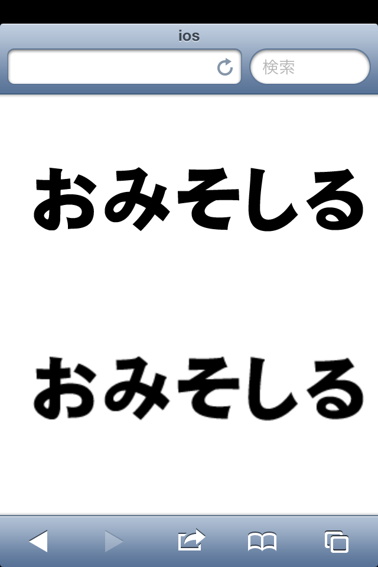

border-radius
角丸
.border-radius {
border-radius: 4px;
}
角ごとに個別に設定することも可能。
border-radius:左上 右上 右下 左下
.border-radius {
border-radius: 4px 10px 6px 23px;
}
border-raidusに50%を指定すると、円を描くことが出来る。
.border-radius {
border-radius: 50%;
}
box-shadow
ドロップシャドウ
.box-shadow {
box-shadow: 2px 2px 10px rgba(0, 0, 0, 0.32);
}
内側
.box-shadow2 {
box-shadow: inset 2px 2px 10px rgba(0, 0, 0, 0.32);
}
複数指定
.box-shadow3 {
box-shadow: inset 2px 2px 10px rgba(0, 0, 0, 0.32), 2px 2px 10px #F00, 6px 6px 10px #00F;
}
二重線引くテクニック
.boudle-line {
border-bottom: 1px solid #0F0;
box-shadow: 0 1px 0 #F00;
}
text-shadow
てきすとしゃどうアリだと文字がはっきりする
.text-shadow {
text-shadow: 0 1px 0 rgba(255, 255, 255, 0.5);
}
gradient
あの虹色がCSSで再現できる
.gradient {
background: #ff0000;
background: -moz-linear-gradient(top, #ff0000 0%, #ff00ff 15%, #0000ff 33%, #00ffff 48%, #00ff00 67%, #ffff00 84%, #ff0000 100%);
background: -webkit-gradient(linear, left top, left bottom, color-stop(0%,#ff0000), color-stop(15%,#ff00ff), color-stop(33%,#0000ff), color-stop(48%,#00ffff), color-stop(67%,#00ff00), color-stop(84%,#ffff00), color-stop(100%,#ff0000));
background: -webkit-linear-gradient(top, #ff0000 0%,#ff00ff 15%,#0000ff 33%,#00ffff 48%,#00ff00 67%,#ffff00 84%,#ff0000 100%);
background: -o-linear-gradient(top, #ff0000 0%,#ff00ff 15%,#0000ff 33%,#00ffff 48%,#00ff00 67%,#ffff00 84%,#ff0000 100%);
background: -ms-linear-gradient(top, #ff0000 0%,#ff00ff 15%,#0000ff 33%,#00ffff 48%,#00ff00 67%,#ffff00 84%,#ff0000 100%);
background: linear-gradient(to bottom, #ff0000 0%,#ff00ff 15%,#0000ff 33%,#00ffff 48%,#00ff00 67%,#ffff00 84%,#ff0000 100%);
filter: progid:DXImageTransform.Microsoft.gradient( startColorstr='#ff0000', endColorstr='#ff0000',GradientType=0 );
}
background-size
いい例
.background-size {
background: url(../img/bg@2x.gif) no-repeat center center; /* bg@2x.gifの画像サイズ(640*160) */
-moz-background-size: 320px auto;
-webkit-background-size: 320px auto;
-o-background-size: 320px auto;
-ms-background-size: 320px auto;
background-size: 320px auto;
}
autoを入力すると、どちらかで指定したサイズと同じ倍率に合わせて拡大・縮小してくれる。
悪い例
.background-size {
-moz-background-size: 320px auto;
-webkit-background-size: 320px auto;
-o-background-size: 320px auto;
-ms-background-size: 320px auto;
background-size: 320px auto;
background: url(../img/bg@2x.gif) no-repeat center center;
}
Safari以外では、background-sizeの値がbackgroundで上書きされてしまう。
一番確実なのはbackgroundをまとめて記述しないこと。
.background-size {
background-image: url(../img/bg@2x.gif);
background-repeat: no-repeat;
background-position: center center;
-moz-background-size: 320px auto;
-webkit-background-size: 320px auto;
-o-background-size: 320px auto;
-ms-background-size: 320px auto;
background-size: 320px auto;
}
ちなみに2倍のサイズで書き出してないと、こんなにも画像の見え方が違う

box-sizing
400px
box-sizing指定あり。
width:400px/padding:50px/border:1px/box-sizing:border-box
width:400px/padding:50px/border:1px/box-sizing:border-box
box-sizing指定なし。
width:400px/padding:50px/border:1px
width:400px/padding:50px/border:1px
box-sizing指定なし。
width:298px/padding:50px/border:1px
今までは計算めんどくさかった
width:298px/padding:50px/border:1px
今までは計算めんどくさかった
.background-size {
-moz-box-sizing: border-box;
-webkit-box-sizing: border-box;
-o-box-sizing: border-box;
-ms-box-sizing: border-box;
box-sizing: border-box;
}
flex-box
float:leftしなくても、自動で横並びになる。
nav.flex-box ul {
display: -webkit-box;
display: -moz-box;
display: -o-box;
display: -ms-box;
display: box;
}
display: box;を指定した子要素にbox-flexを指定すると自動で幅を埋めてくれる。
nav.flex-box ul li {
-webkit-box-flex: 1;
-moz-box-flex: 1;
-o-box-flex: 1;
-ms-box-flex: 1;
box-flex: 1;
}
同じフレックスボックス同士で、高さも自動で揃えてくれる。
今まで紹介したのを合わせると、画像を使わず簡単なナビゲーションは作れる。
appearance
- checkbox
.appearance {
-moz-appearance: none;
-webkit-appearance: none;
-o-appearance: none;
-ms-appearance: none;
appearance: none;
}